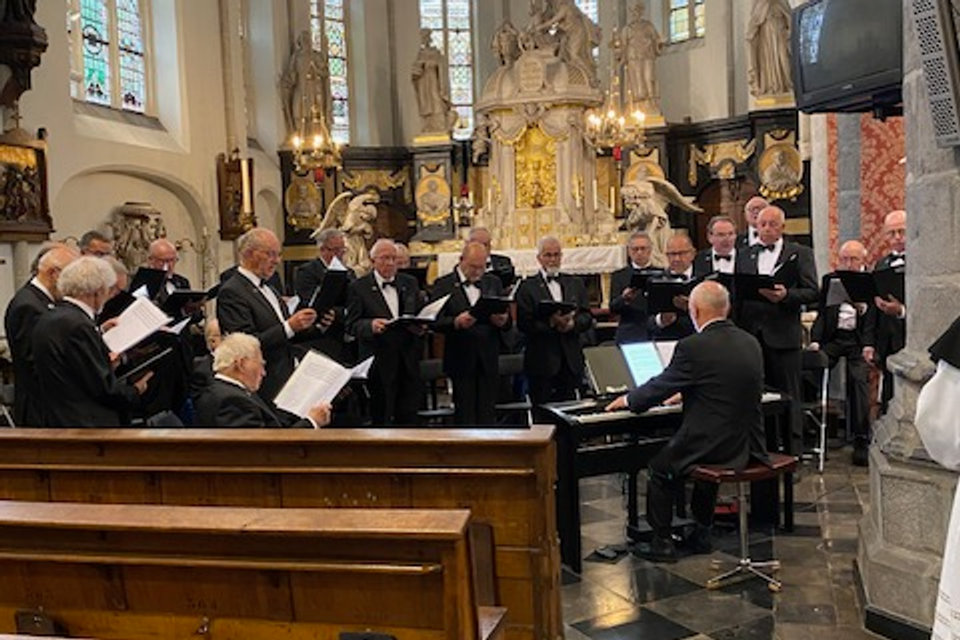
13 mei 2026 · In memoriam
Afscheid van René Hermans
Voorzitter Jan Stals sprak tijdens de afscheidsdienst. René werd in 1973 lid en was dit jaar 53 jaar bij het koor; zijn 50-jarig jubileum vierde hij vol trots met familie en vrienden. Iedereen die René kende, weet dat hij een fervent fietser was. Tijdens een fietstocht naar Hunsel bleek hij kilometers terug rustig op een bankje te zitten, met zijn sigaartje, om even van het uitzicht te genieten. Dat typeerde hem: hij deed de dingen op zijn eigen manier, soms eigenwijs, maar nooit kwaad bedoeld.
Hij was een trouw bezoeker van de repetities, met het vaste ritueel van een kopje koffie op de pianokast en in de pauze een sigaartje buiten. Zijn gezondheid ging snel achteruit, maar hij wist wat hij wilde: in een persoonlijk gesprek met de dirigent vroeg hij of het koor zijn uitvaartdienst wilde opluisteren, welke liederen we moesten zingen en waar we op het altaar moesten staan.
"Beste René, natuurlijk vullen wij vandaag al jouw wensen in, dat heb je zeker verdiend. Je was zonder meer een geweldig lid, we zullen je niet vergeten. Rust zacht."
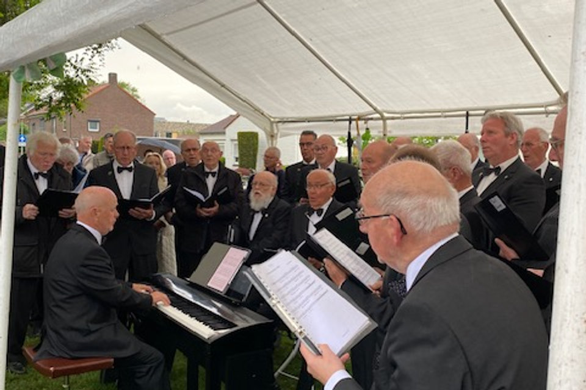
4 mei 2026 · Dodenherdenking
Eendracht zweeg ook twee minuten
Het koor was aanwezig bij de herdenkingsplechtigheid in Stramproy. Het regende, maar onder een partytent kon het koor zijn zang ten gehore brengen; het publiek schuilde onder paraplu's. Tussen de toespraken van de voorzitter van de Dorpsraad Stramproy en de burgemeester van Weert zongen we Nearer, My God, to Thee en Homeward Bound. Na de twee minuten stilte volgden het eerste en achtste couplet van het Wilhelmus. We sloten af met Da te mogu pismom zvati, met een solo van Jan Kusters.

27 maart 2026 · Optreden
Optreden in Kessenich
Op uitnodiging van de ouderenvereniging uit Kessenich luisterde het koor een activiteit van deze vereniging op. Deze keer niet in kostuum maar in gewone kledij, geaccentueerd met de fraaie sjaal die Ted van de Hurk vorig jaar tijdens het Ceciliafeest schonk.
Voor de pauze zongen we klassieke en moderne liederen, na de pauze Nederlandse en Limburgse. Op ons verzoek zong het publiek vrolijk en uitbundig mee. Al met al een erg geslaagde en gezellige middag in een gastvrij Kessenich.

22 november 2025 · Ceciliafeest
Lei van den Schoor zeventig jaar lid, nu ook erelid
In een nieuwe opzet vond het Ceciliafeest op zaterdagmiddag plaats. Middelpunt was Lei van den Schoor, die zijn zeventigjarig lidmaatschap vierde. Voorzitter Jan Stals had mooie woorden voor Lei en Annie. Lei was al lid van verdienste, maar werd nu ook benoemd tot erelid.
Daarna moesten de zangers de hersens laten werken tijdens een pubquiz. Twee groepen eindigden gelijk, dus besliste een benaderingsvraag over het aantal inwoners van Weert op 30 september 2025: de groep met onder anderen Paul van Geldorp zat er het dichtst bij. Het buffet werd geopend door de familie Van den Schoor. Tussendoor kregen de zangers nog een cadeautje: dankzij Ted van de Hurk ontvingen de koorleden een sjaal.
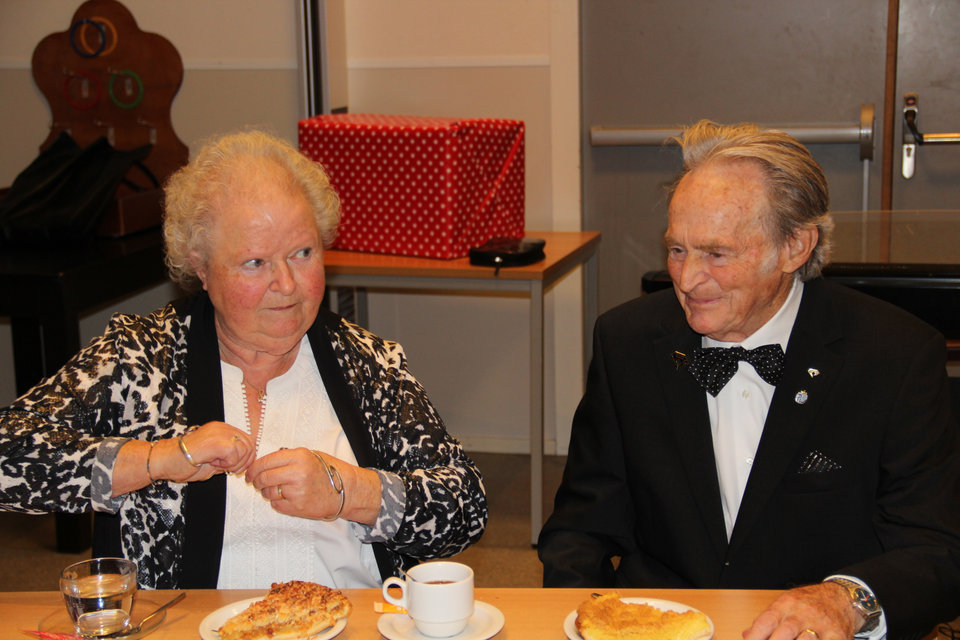
19 november 2025 · Optreden
Terug in de Ververshof
Vorig jaar traden we ook op in de Ververshof. Dat was een succes en we werden meteen gevraagd om terug te komen. De bewoners waren zeer enthousiast, vooral bij de herkenbare liederen uit ons Galderbeukse. In de pauze werden we getrakteerd op koffie met een brownie en na afloop kregen we als dank een doos Merci.

26 oktober 2025 · Concert
Herfstconcert in een volle Corneel
Het jaarlijkse herfstconcert, met medewerking van gemengd koor Con Amore uit Baexem en de 14-jarige Robin Peeters op trompet, lid van Harmonie van het Heilig Hart uit Altweerterheide. Eendracht opende met Nearer, My God, to Thee, The Sound of Silence, Bring Him Home, When I'm Sixty-Four, Blowing in the Wind, Da te mogu pismom zvati en In de stille Kempen. Daarna was het podium voor Robin Peeters, begeleid op piano door Bert Peeters.
Na de pauze zong Con Amore onder leiding van Veronika Chujanova, met Toon Konings aan de piano: Cantar, Wochenend und Sonnenschein, Siyahamba, El Vito, Pastorale, Tranen gelachen en Vive l'amour. Beide koren sloten af met 't Veldboeket en Wie sjoeën ós Limburg is.
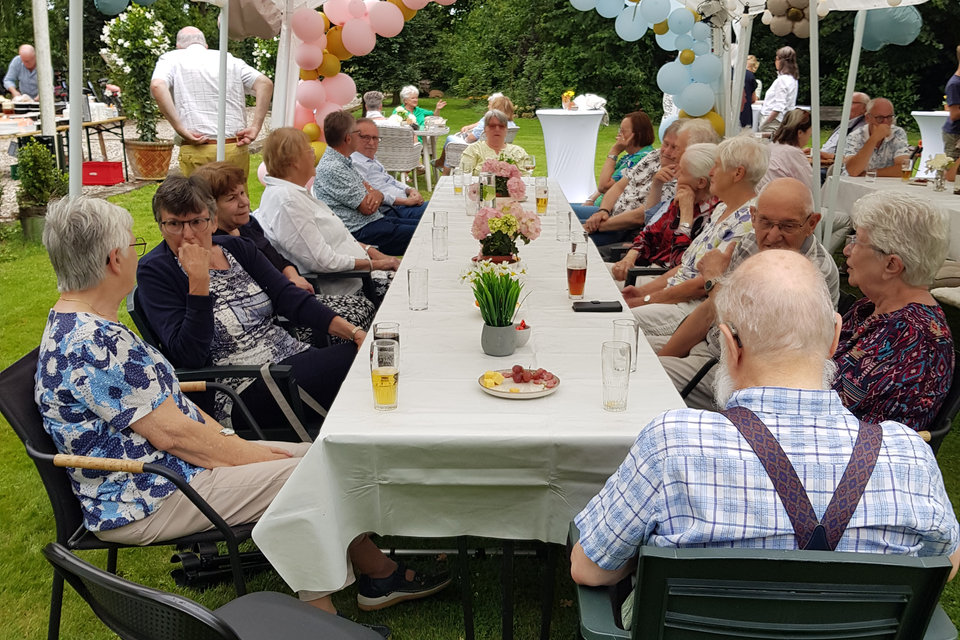
Zomer 2025 · Seizoensafsluiting
Het zomerreces werd ingeluid
Zoals gebruikelijk sloten we het seizoen af met een fietstocht, die eindigde in de tuin van Mark en Dani. Fietsers en niet-fietsers werden gastvrij ontvangen met een drankje. De barbecue werd in vuur en vlam gezet door Mark, Fred en Jan. Het weer was het koor goed gezind; de maaltijd werd afgesloten met een ijsje en daarna bleef het nog lang gezellig.
10 en 11 mei 2025 · Bevrijdingsconcerten
Wieërter Oorlogslaeve Belaeve: 80 jaar vrijheid
80 jaar vrijheid is niet vanzelfsprekend. Harmonie van het Heilig Hart Altweerterheide, Mannenkoor Eendracht, het Weerter Mannenkoor en de Geschied- en Oudheidkundige Kring De Aldenborgh sloegen de handen ineen voor een project waarin muziek, beeld, toneel en verhalen samenkwamen. Cineast Peter Crins bracht het Weerter verleden in beeld na gesprekken met oorlogsgetuigen: unieke beelden die nooit eerder vertoond waren.
Het project kende vijf onderdelen, waaronder een educatief programma voor groep 7 en 8, ontwikkeld door stichting Edumare, waaraan zo'n vijftien scholen en 850 leerlingen in de gemeente Weert deelnamen, en een fietstocht langs oorlogsmonumenten op 4 mei. De koren repeteerden eerst apart en daarna samen, in Altweerterheide en in het Muziekhuis in Weert, met een generale repetitie op 9 mei in het Franciscushuis. Op het grasveld bij het St. Franciscushuis op de Biest was een re-enactgroep actief met een kampement, originele voertuigen en officierstenten.
Op 10 en 11 mei liep de zaal in het Franciscushuis vol voor de beide mannenkoren, de harmonie, het combo, soliste Jeanette Geraats, violiste Irene Ruys en doedelzakspelers uit Maastricht. Beide dagen waren uitverkocht; op zondag moesten mensen zelfs blijven staan. Fotografie: Jack Duijf.
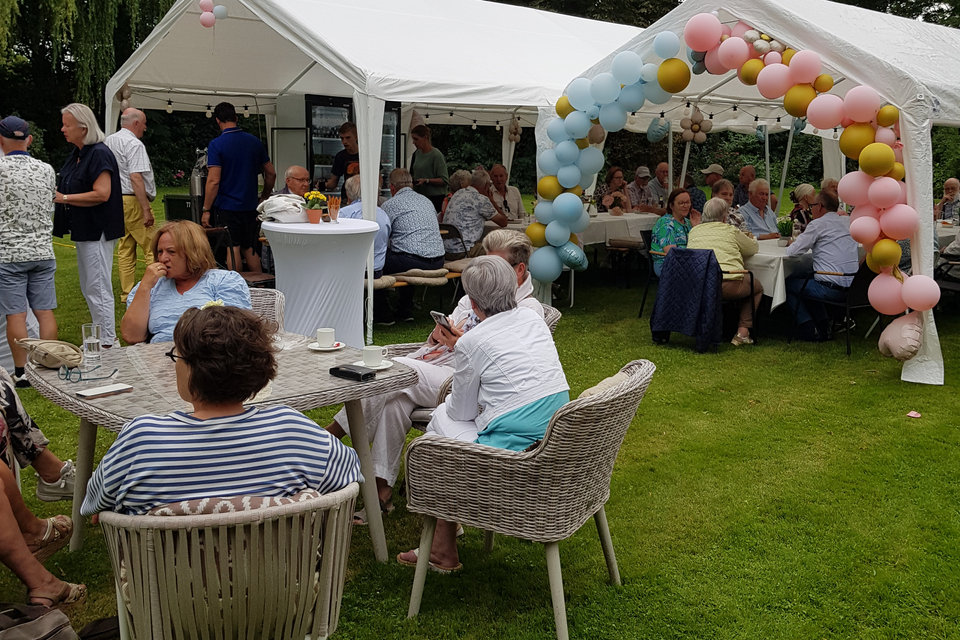
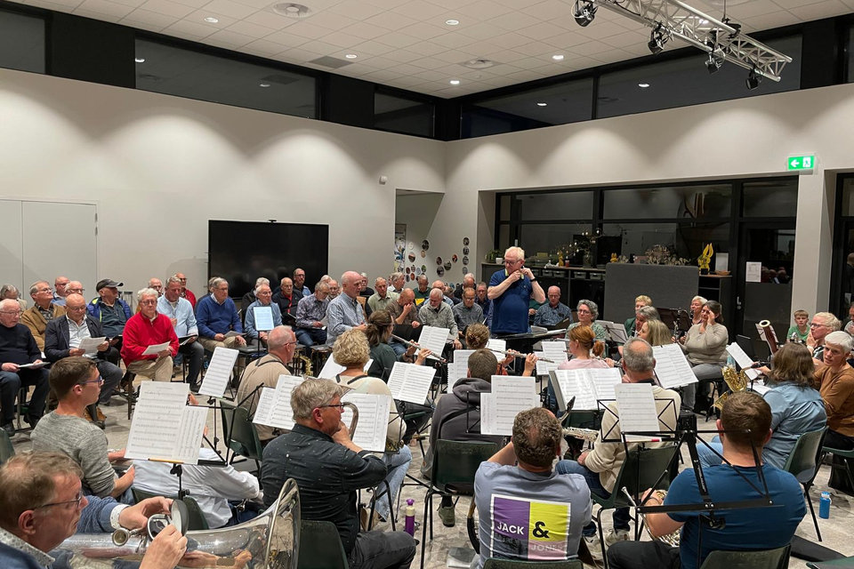
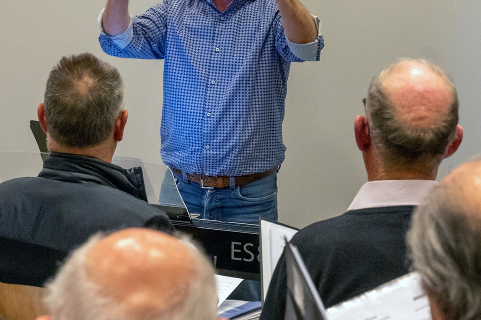
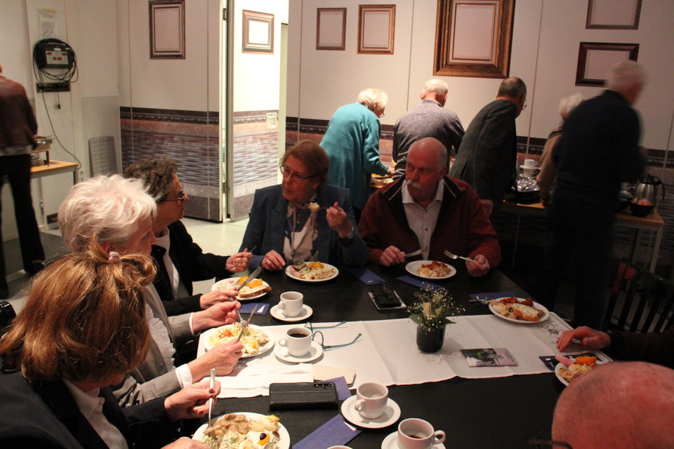
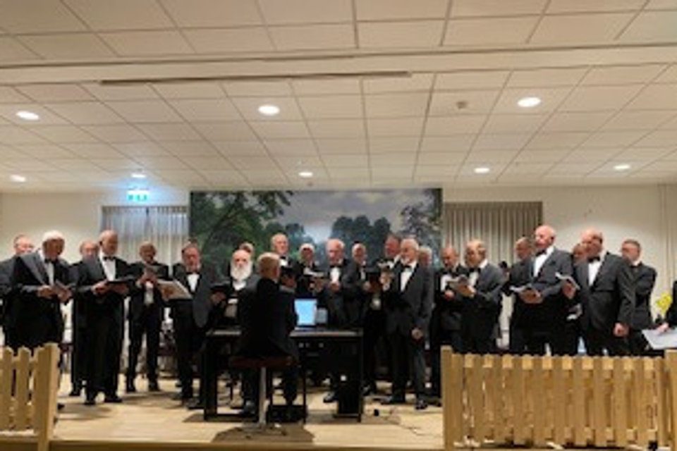
15 december 2024 · Concert
Winterconcert in de Corneel
De zaal liep al snel vol toen de deuren opengingen. Eendracht opende het concert, daarna nam gemengd koor El Puente uit Ittervoort het podium over. Na de pauze trad mannenkoor De Zank uit Beegden op. Het concert werd afgesloten met een lied van Mozart door alle koren samen, onder leiding van Lilit Sati.
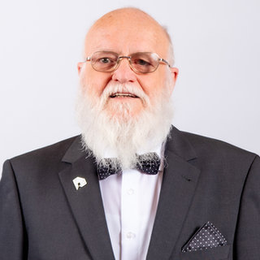
23 november 2024 · Ceciliafeest
Frits Lavell en Harrie Kessels 25 jaar lid
Dit jaar iets anders ingevuld: niet eerst de H. Mis, maar om 18.30 uur in de Corneel, waar de jubilarissen om 19.00 uur het buffet openden. Jan Stals verhaalde over de loopbaan van Frits en de activiteiten die hij voor het koor verricht; Frits kreeg de oorkonde en de speld, voor Saskia waren er bloemen. Ook bij Harrie stond de voorzitter stil bij zijn loopbaan in het zuiden van Limburg en zijn opleiding tot aannemer in de avonduren. Paul Koolen zette zich achter de piano voor het Lang zullen ze leven.
12 november 2024 · Optreden
Koorconcert in de Ververshof
Voor de bewoners van het verzorgingshuis zongen we met veel enthousiasme Hinematov, het Slavenkoor, In 't graas van de wei, het Ave Maria in dialect, Nearer, My God, to Thee, When I'm Sixty-Four, In de stille Kempen en Hemel en aarde, afgesloten met het Leedje van Swartbroek. Na de pauze, met koffie en een ouderwetse kano, deden de liederen uit ons Galderboekse veel bij de bewoners: armen werden ineengeslagen en er werd uitbundig meegezongen en geschunkeld. We werden meteen gevraagd of we volgend jaar terugkwamen.
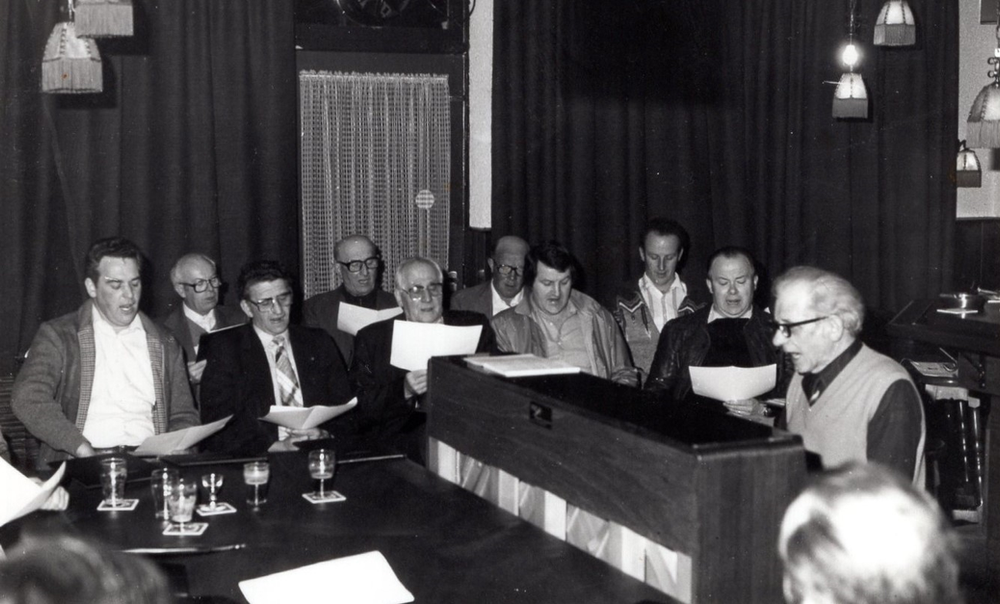
4 oktober 2024 · In memoriam
Afscheid van ere-dirigent Hans Braun
Hans Braun, onze ere-dirigent, is overleden. Op 4 oktober zongen we bij de afscheidsdienst in de Paterskerk: Nearer, My God, to Thee en Homeward Bound. We sloten ons optreden af met het Leedje veur Swartbrook.
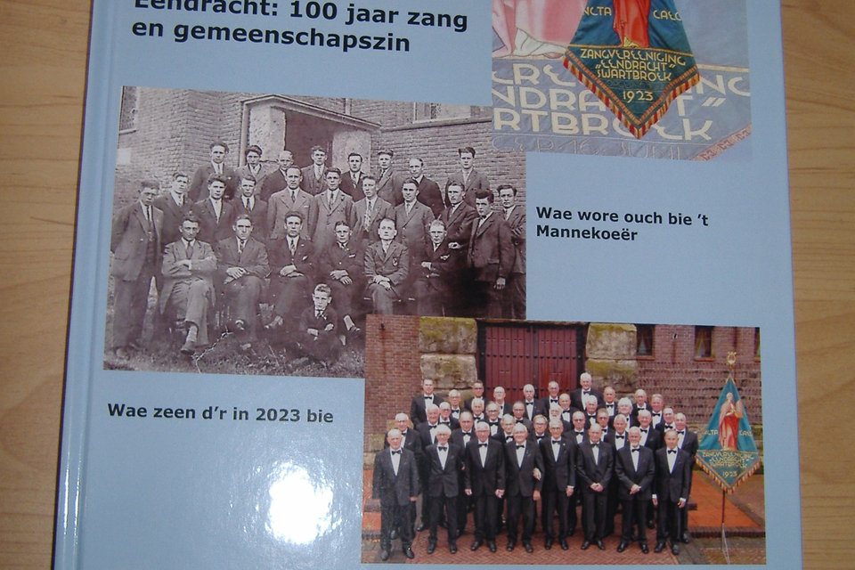
25 augustus en 14 juni 2024 · Optredens
Bakhuisje Klein Karelke en Hospice Weert
Op 25 augustus werd het bakhuisje Klein Karelke, door vrijwilligers in ere hersteld, officieel geopend. Harmonie Heilig Hart en Mannenkoor Eendracht zorgden voor de muzikale omlijsting; de bezoekers lieten zich de vlaai goed smaken.
Op 14 juni, een mooie dag zonder regen, zongen we in de fraaie tuin van Hospice Weert. Exact om 19.00 uur stond het koor paraat voor de kamers van de cliënten: Dona nobis pacem, In 't graas van de wei, het Slavenkoor, het Ave Maria in dialect, In de stille Kempen, 't Veldboeket en Hemel en aarde. Daarna verhuisde de piano naar een open plek in de tuin voor Nearer, My God, to Thee, Homeward Bound, Plaisir d'amour, When I'm Sixty-Four en Hinematov. Tussendoor kibbeling, na afloop een drankje en een ijsje.
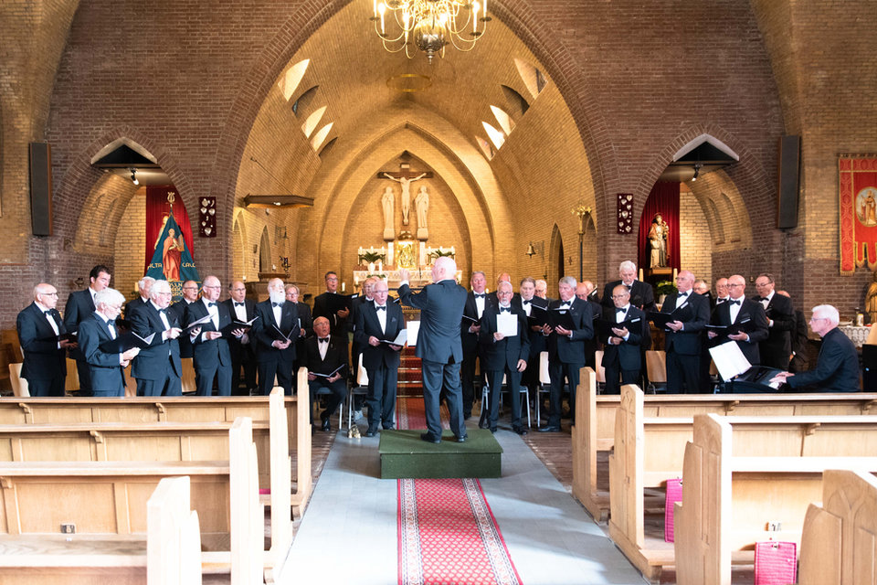
17 december 2023 · Jubileumconcert
Koninklijke Erepenning voor het koor
Met medewerking van dames- en jongerenkoor Cantarella, Harmonie St. Cecilia uit Koningsbosch en soliste Veerle Henkens. Mannenkoor Eendracht beet de spits af, de harmonie bracht eigen stukken, het dameskoor en het jongerenkoor traden ook zelfstandig op, en Veerle Henkens zong solo én met het mannenkoor. Bert Peeters zorgde voor de begeleiding.
In de pauze nam burgemeester Vlecken het woord. Hij had een verrassing: hij reikte de Koninklijke Erepenning uit aan het bestuur. Voorzitter Jan Stals sprak een dankwoord uit en was verguld.
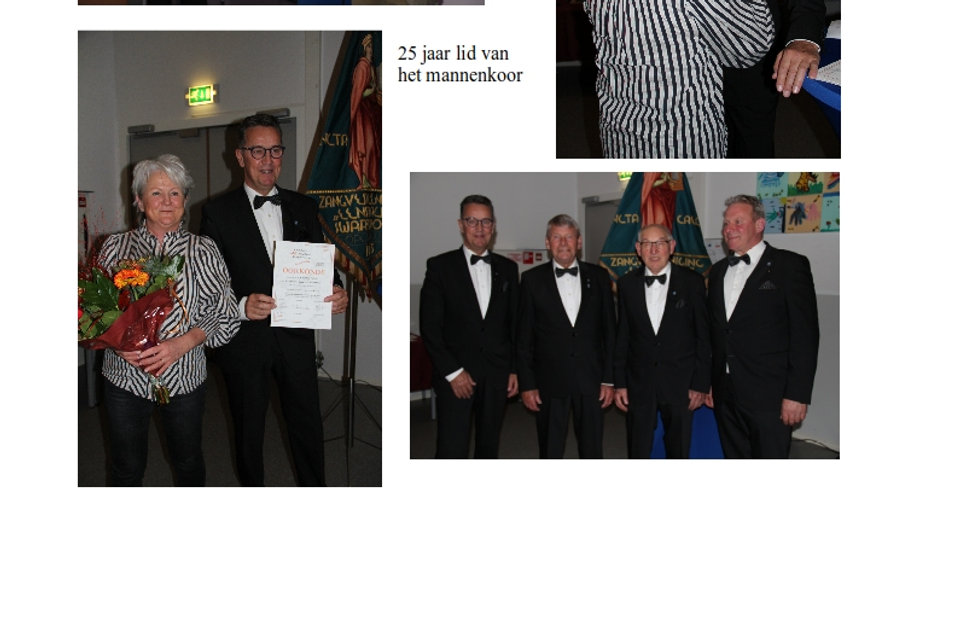
23 november 2023 · Ceciliafeest
Jubilarissen in het zonnetje
We begonnen met het zingen van de mis, schoven aan bij het buffet en zetten daarna de jubilarissen in het zonnetje. Jan Gijsen zingt niet meer, maar bleef lid en genoot zichtbaar van zijn huldiging voor 40 jaar lidmaatschap. Ook Hans Braun werd gehuldigd voor 40 jaar: de eerste 25 jaar als dirigent, waarin hij het koor op grote hoogte bracht. René Hermans en Pierre Jacobs vierden 50 jaar lidmaatschap; de bloemen waren voor Dora. Jo Ramaekers maakte de 25 jaar vol en kreeg thuis bezoek van Jan Stals en Frits Lavell. Jan Nies, 50 jaar lid, heeft dit jubileum helaas niet zelf kunnen meemaken; de oorkonde en speld werden thuis aan zijn echtgenote overhandigd. Daarna gingen de voetjes van de vloer.

14 oktober 2023 · Presentatie
Jubileumboek en cd gepresenteerd
Burgemeester Vlecken kwam naar Swartbroek om het eerste exemplaar van het boek en de cd in ontvangst te nemen. Daarna zong het koor de liederen van de cd en konden alle leden het boek en de cd in ontvangst nemen. Het boek bevat veel foto's, krantenartikelen en anekdotes. De aanwezigen zagen ook een presentatie van honderd jaar foto's van het koor. De avond werd afgesloten met een optreden van Ad Cardinaal en Fer Hendrikx.
Het boek en de cd zijn te koop bij de leden van het koor en bij eetcafé & catering Bi-j Sanne tijdens de openingstijden (wo, vr, za en zo vanaf 11.00 uur).
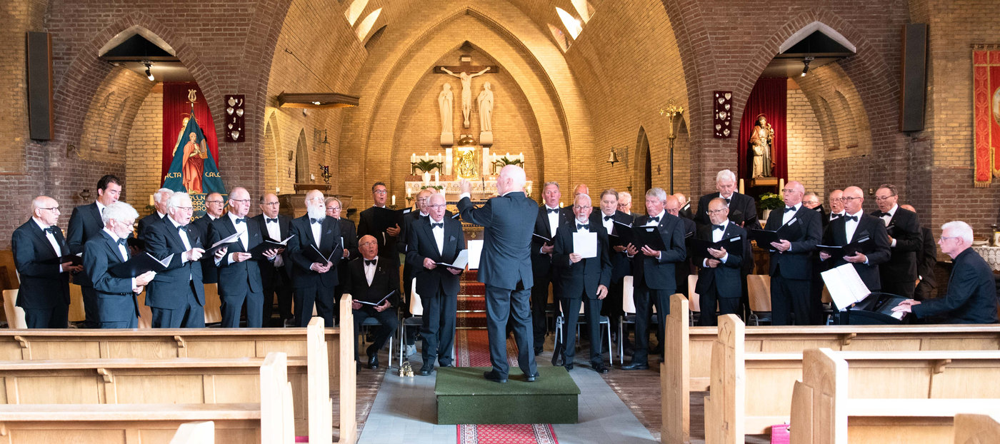
17 juni 2023 · Feestavond
Op deze dag bestond het koor precies 100 jaar
Volgens traditie begonnen we om 18.00 uur in de Sint-Corneliuskerk met een Heilige Mis, opgeluisterd door het koor. Pastoor Amal was in zijn schik, want de kerk zat vol. Daarna koffie met vlaai, en de koorleden werden uitgedost met corsage en speldje, als echte gastheren. Om 19.30 uur begon de receptie, met felicitaties van onder anderen burgemeester Vlecken, de schutterij en Cantarella. Ceremoniemeester Jan Custers opende de feestavond met muziek van Hurricane-Two; er werd met volle borst meegezongen op bekende evergreens.
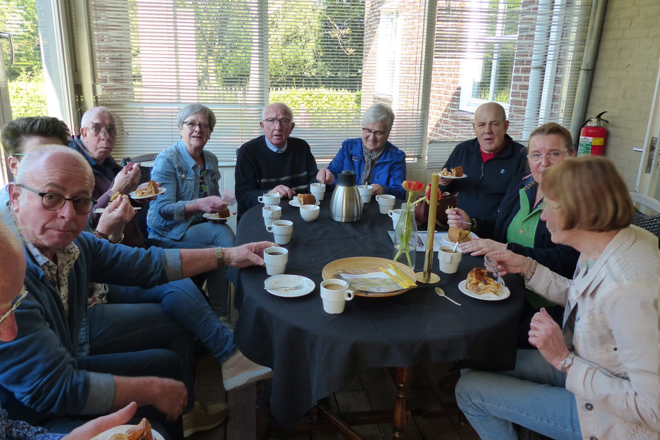
13 mei 2023 · Dagje uit
Aftrap van het jubileumjaar: Haps en Arcen
In vele slaapkamers ging de wekker vroeg af. Met de bus vanaf het Vosseven naar Haps, waar we in Gastvrei Aalshof werden ontvangen met koffie en huisgemaakte appeltaart, weetjes over kippeneieren en een proeverij van vier soorten advocaat. In de tuin werd voor de gastvrouw het Swartbroeks liedje gezongen. Daarna naar Arcen, waar de bus na het uitstappen niet meer wilde starten en een aardige file in het centrum veroorzaakte. Na een rondleiding door graanbranderij De IJsvogel en een proefplankje jenevers eindigde de dag met een buffet op het Vosseven en veel zang uit het Galderboekje, begeleid door Ad Cardinaal op gitaar.
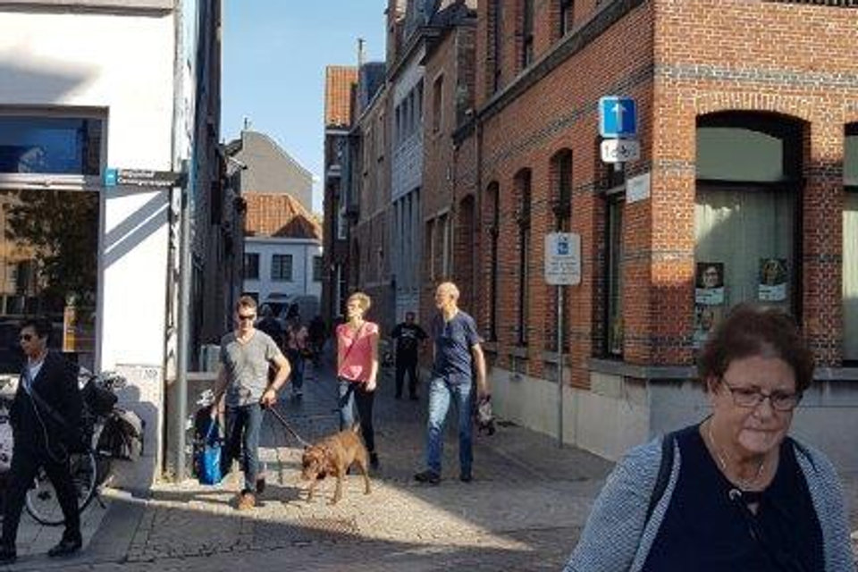
13 oktober 2018 · Uitstapje
Uitstapje en optreden in Lier
Het koor gaf een concert in Lier en maakte er een leuk uitstapje van, met een bezoek aan verschillende bezienswaardigheden.
Ook in het archief: Ceciliafeest 2022 (26 november), huldiging jubilarissen (14 mei 2022), Ceciliafeest 2019 (30 november) en Ceciliafeest 2018 (17 november).
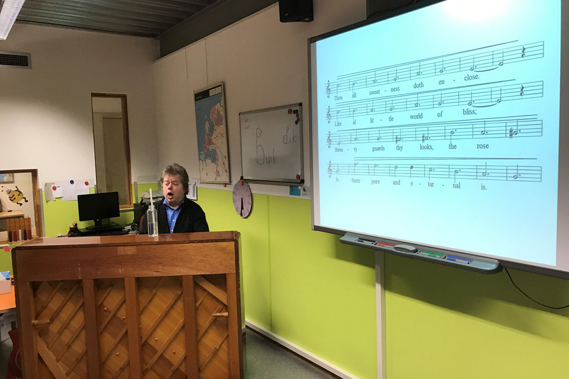
2016, 2017 en 2018 · Koorscholing
Werken aan de koorklank
Ons koor nam drie jaar op rij deel aan koorscholing. Onder de bezielende leiding van docent Harrie Spronken, achter de piano, werd per stemgroep geoefend en getraind op een juiste ademhaling en het gebruik van de stem. De koorscholing had een merkbaar positief effect op de koorklank, die er (nog) mooier van werd.